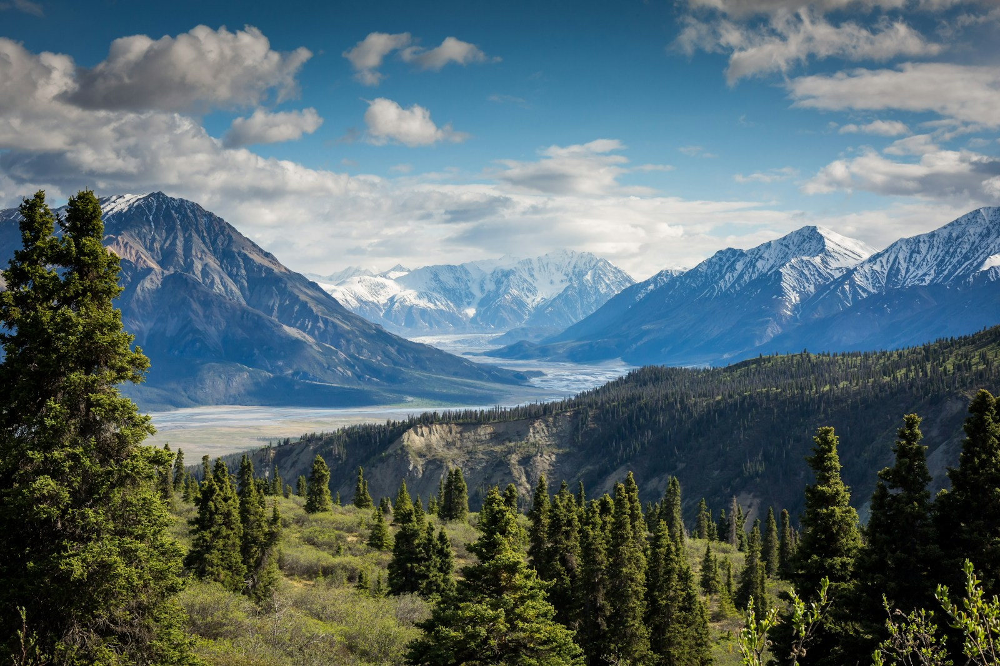

Skip to content
JM STUDIO
Projects
About
All projects
LAND / LIGHT / STILLNESS
Studies of natural history
The quiet life of landscapes.
Sunlight falling through a dense forest

A mountain peak beneath passing clouds
CONTINUE EXPLORING
Passing places